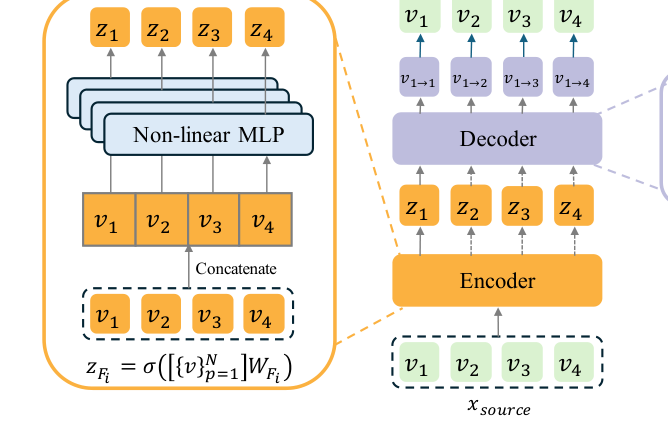
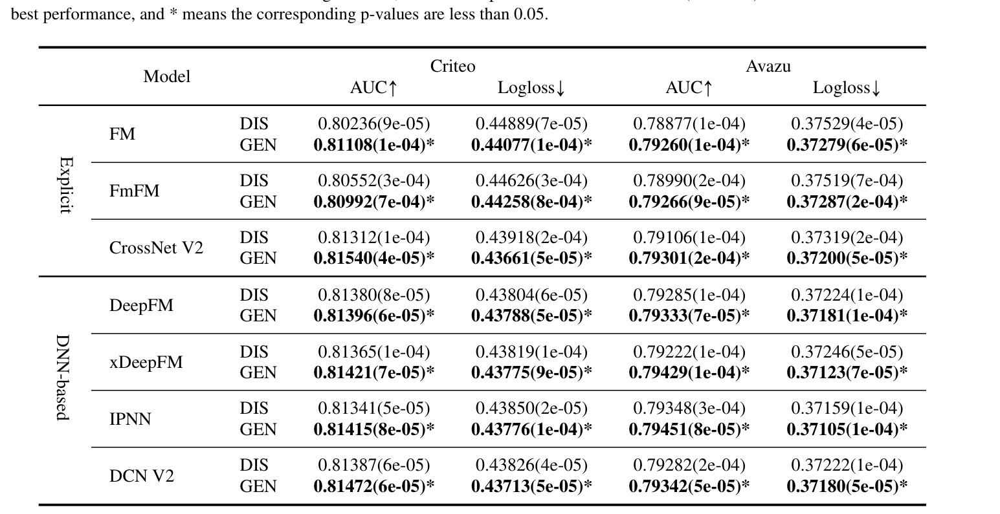
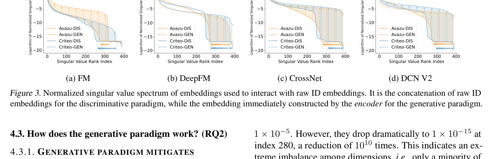
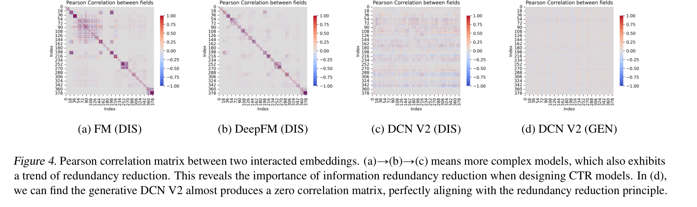

Build hidden feature embeddings from raw categorical fields with a lightweight encoder.
ICML 2025
From Feature Interaction to Feature Generation
A supervised feature generation paradigm that reformulates CTR prediction models from discriminative raw-ID interaction to generative representation learning.
Mingjia Yin, Junwei Pan, Hao Wang, Ximei Wang, Shangyu Zhang, Jie Jiang, Defu Lian, and Enhong Chen. From Feature Interaction to Feature Generation: A Generative Paradigm of CTR Prediction Models. In Proceedings of the 42nd International Conference on Machine Learning (ICML 2025), PMLR 267, 2025.
Paper / PDF / Project Page / Citation
GE4Rec introduces Supervised Feature Generation for CTR prediction. It shifts CTR models from discriminative feature interaction toward generative feature representation, reducing embedding collapse and information redundancy while preserving compatibility with common FuxiCTR-style backbones.

1. Method: Supervised Feature Generation
GE4Rec adds a generative representation pathway to existing CTR backbones, using supervised click labels to train feature generation rather than relying only on direct interaction among raw ID embeddings.
Decode generated feature embeddings that can be consumed by existing interaction functions.
Train under supervised CTR labels to reduce collapse and redundancy while improving prediction.
2. Code
The repository is implemented on top of FuxiCTR and provides scripts for data preparation, reproduction, and paper-style analysis.
conda create -n GE4Rec python=3.10 -y
conda activate GE4Rec
pip install torch torchvision torchaudio
pip install -r requirements.txtbash 1.prepare.shbash 2.reproduce.sh
bash 3.analyze.sh3. Experimental Highlights
The generative paradigm improves multiple CTR backbones while analysis plots explain why it helps: healthier embedding spectra and lower redundancy.
AUC
Main performance gains
Generative variants improve AUC and Logloss across Avazu and Criteo for multiple base models.
Spectrum
Less collapse
Generated embeddings preserve a healthier singular-value spectrum than discriminative embeddings.
Corr.
Less redundancy
Correlation matrices show reduced redundant information between interacted embeddings.



GE4Rec keeps the model zoo organization familiar to FuxiCTR users, making it easier to add new CTR backbones.
4. Citation
@inproceedings{yin2025feature,
title = {From Feature Interaction to Feature Generation: A Generative Paradigm of CTR Prediction Models},
author = {Yin, Mingjia and Pan, Junwei and Wang, Hao and Wang, Ximei and Zhang, Shangyu and Jiang, Jie and Lian, Defu and Chen, Enhong},
booktitle = {Proceedings of the 42nd International Conference on Machine Learning},
series = {Proceedings of Machine Learning Research},
volume = {267},
year = {2025}
}